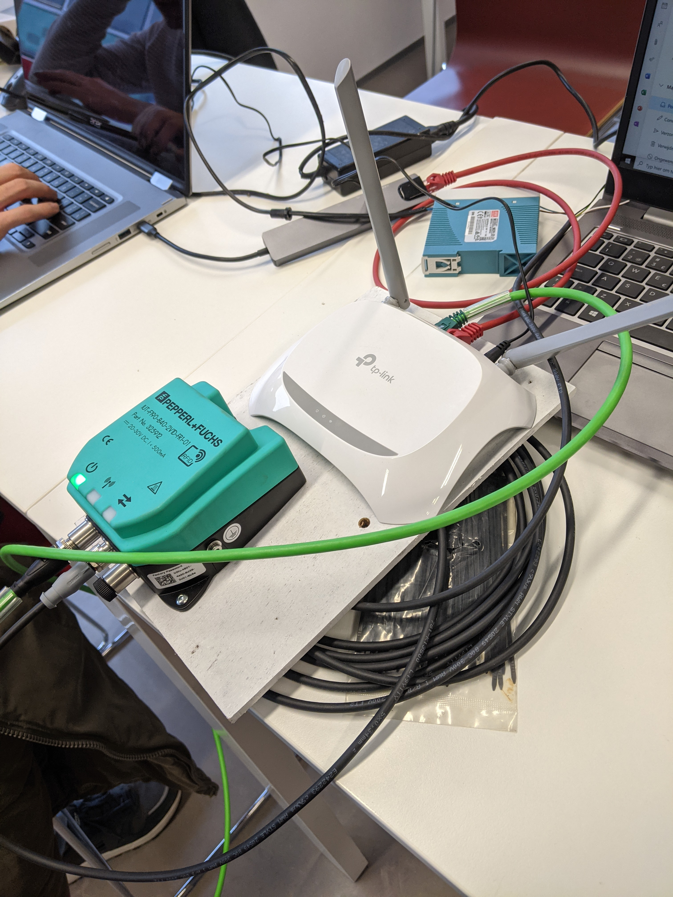
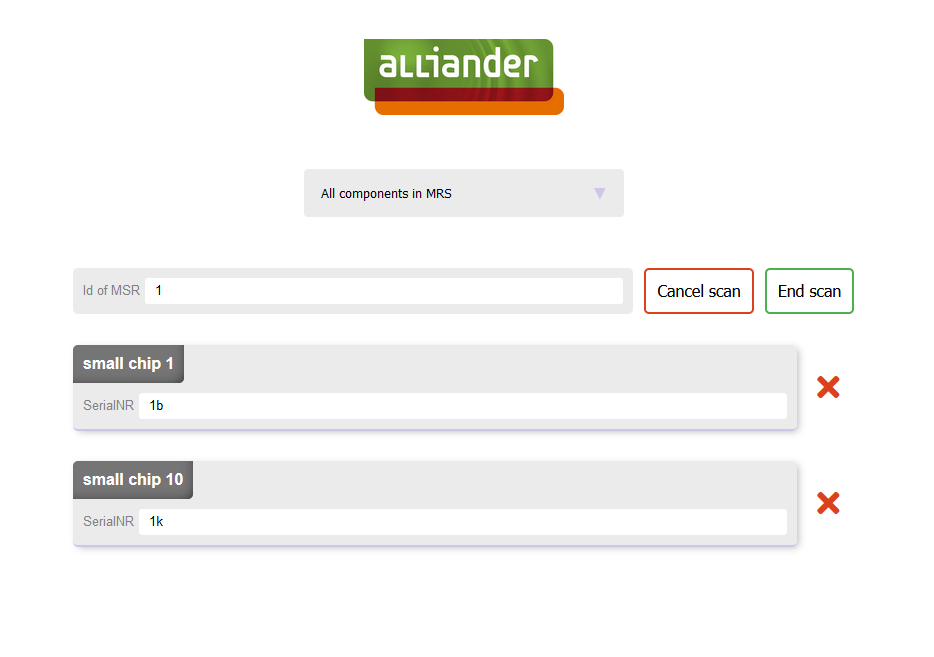
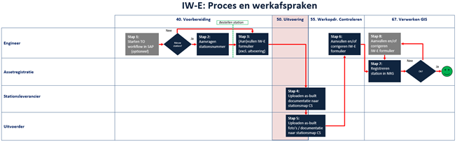
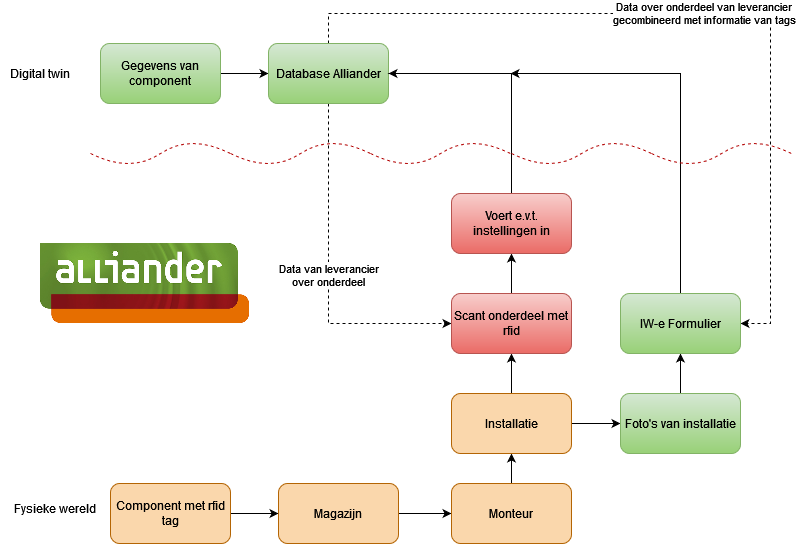
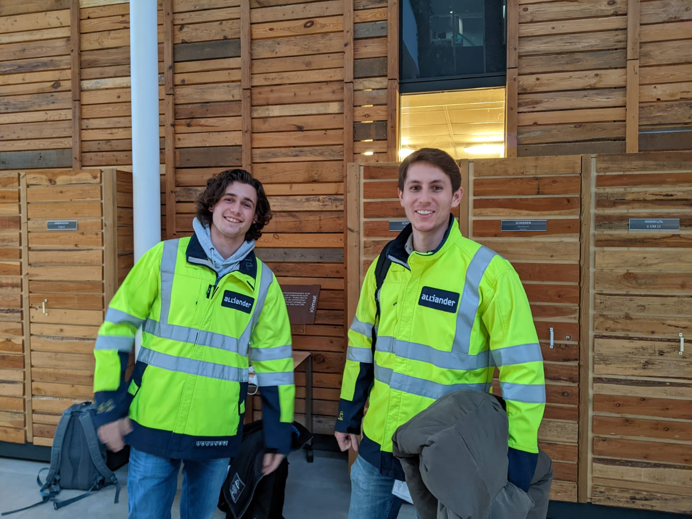
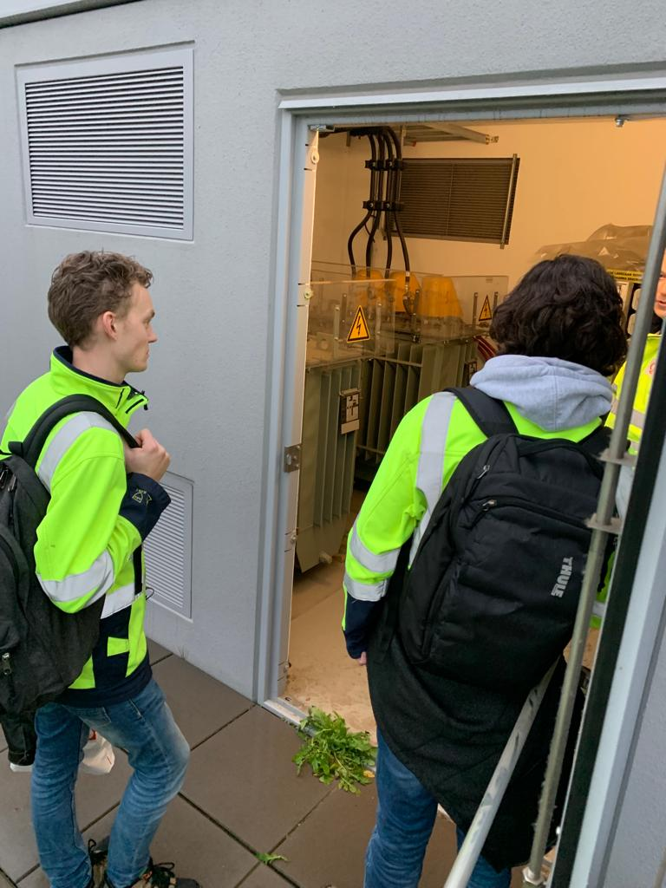

Project Alliander
Na de presentaties van de projecten was ik erg enthousiast over het project bij Alliander, ik was daarom ook erg blij toen ik hoorde dat ik bij dit project was ingedeeld. Samen met Evan Franciszok en Ard van Schoonhoven hebben we aan dit project gewerkt.
Alliander het het volgende project voor ons; of het mogelijk is om doormiddel van IOT solutions het adminstratief proces van middenspanningsruimtes te versnellen/automatiseren.
Voordat we begonnen met het project hebben als groep al een aantal zaken besproken over hoe we het project zouden aanpakken. We doen het project volgens de Scrum methode, Evan was hier al bekend mee en na gezamenlijk overleg vonden wij dit allemaal de beste manier om ons project te maken. Om goed op te hoogte te blijven waar iedereen mee bezig was hebben we besloten om elke dag een daily stand up te doen.
We hadden afgesproken met de opdrachtgever dat we 1 keer in de week samen zouden zitten. In het begin spraken we af op het kantoor van Alliander zelf, later na de aangescherpte corona maatregelen was het voor ons niet meer mogelijk om naar Alliander te gaan. We hadden toen besloten om als groep wel nog zoveel mogelijk fysiek samen te zitten omdat dit het beste voor ons werkte, hierna spraken we dagelijks af op de HAN in Arnhem. Wekelijks deden wij vanuit Arnhem een online teamsmeeting met de opdrachtgever.
PVA.
Plan van aanpakOnderzoek
Hieronder kunt u het onderzoek vinden dat wij hebben uitgevoerd in de voorbereidende fase, dit is de fase waarin we vooral gingen kijken naar wat we nodig hadden om een prototype te kunnen maken.
Voorbereidend onderzoekIn dit onderzoek gingen we opzoek naar de beste technologië die geschikt is voor hun toepassing, het bleek dat RFID het beste geschikt is. De volgende stap was het uitzoeken van de benodigde materialen voor het maken van een werkend prototype.
Maken van prototype
Na een enkele weken waren alle onderdelen binnen gekomen en konden we aan de slag gaan met het prototype.
Nadat we het prototype werkend hadden gekregen kon Evan beginnen met het coderen van een programma zodat we de RFID-tags kunnen uitlezen. Hierbij moesten we ook onderzoek doen naar een database waarin de gegevens van de RFID-tags in opgeslagen kunnen worden, Evan besloot uiteindelijk voor een SQL database te kiezen.
Onderzoek soort databaseOm te kunnen werken met het prototype moest er ook een webinterface gemaakt worden die verbonden was met een API voor het uitlezen van de RFID-leeskop. In het filmpje hieronder demonsteren we hoe de eerste versie van het prototype werkte.
Nieuw proces
Uiteindelijk moesten we ook gaan bedenken hoe onze innovatie, de processen binnen Alliander doet veranderen. Hieronder vindt u het oude proces en het nieuwe proces. In de businesscase vindt u de verdere diepgang.
 Veldonderzoek
Om ons prototype te testen in een echte middenspanningsruimte zijn we 1 dag naar Allianders onderzoekscentrum in Duiven geweest. Vanuit deze locatie zijn we naar dichtbijzijnde middenspanningsruimtes gelopen zodat we ons prototype konden testen.
